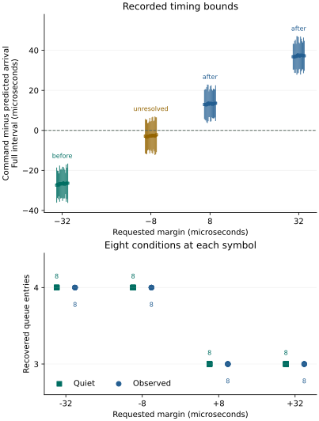

Question and rationale
The preceding prepared acquisition reduced median command delay after waiting to 3.213 µs. Counts agreed with a conditional recurring-arrival model, but commands lay well inside its intervals. This investigation tests the boundary where command timing predicts a different first admitted arrival.
The prediction is specific: a continuous command wholly before the second arrival projected from the divider write should first admit cycle 2; one wholly after it should first admit cycle 3. The reference period must be measured for each condition, and the full timing uncertainty retained. Predictable local establishment and observation support continued work toward physical Seigsit creation and transfer.
Method
Use dividers A=0x00ffff00 and B=0x00dfff00 in A–B–B–A order. Retain input 4, four-millisecond reference and acquisition windows, queue settings and the 200 µs interval before writing the already selected divider value.
SEIGRASM derives a period interval from each observed reference. Every recorded change must be an error-clear unit queue increase. Consecutive arrival brackets [aL,aU] and [bL,bU] supply spacing [bL−aU,bU−aL]. Require positive lower bounds and a nonempty common intersection [L,U]. Set M=L+floor((U−L)/2), then schedule the deadline from divider-write access end at twice M, offset by −32, −8, +8 or +32 µs. Margin magnitudes round upward to counter ticks.
Each block contains a no-command control, four continuous conditions at each offset, and a single-command control. The continuous order is quiet/observed/observed/quiet; blocks 2 and 4 reverse all eighteen conditions. There are 32 quiet and 32 observed continuous acquisitions plus eight controls.
After reference acquisition, stop and drain locally to empty. Write the unchanged divider once with its existing guard and readbacks. Prepare the acquisition before waiting, then require a fresh empty/error-clear queue and the shared converter-control guard. Record actual command and stop brackets, recover entries and retain the stopped check. No queue entry is consumed within either acquisition window; no SD persistence occurs between reference and stopped acquisition.
Assessment criteria
For divider-write bracket [wL,wU], the prospective second-arrival bracket is [wL+2L,wU+2U]. A command is before only when its access ends strictly before that entire bracket; it is after only when its access begins strictly after it. Touching or overlapping intervals are unresolved. Requested offset alone does not establish actual position.
First verify recording, settings, guards, native arithmetic, recovery and restoration. Then compare first-arrival brackets and certain/possible counts from the measured period and actual command/stop bounds. Timing classification and model agreement are outcomes, not execution-admission requirements. The frozen protocol defines the conditions, failure behavior and alternative outcomes.
Preparation and implementation
Candidate A083EA3870E0 retains the preceding 4,696 instruction octets and appends a boundary coordinator at byte 4,696 and bounded period estimator at byte 5,172. The RP1 stream occupies 5,492 octets in its existing region at 0x88000. Other instruction streams retain their bytes and placement. Period estimation operates on the recorded reference and performs no component access.
The report grows to 460 cells. Cells 450–459 retain estimator format, requested side and margin, period lower/upper bounds and midpoint, rounded margin ticks, multiplier 2, estimator outcome and reserved zero. Header cell 1 contains margin microseconds; cell 2 contains the derived offset after successful estimation. Unusable reference spacing refuses the intervention; missed preparation deadlines refuse acquisition. Existing preparation and access timestamps remain available.
All 72 image-bound execution checks passed, and both installation readbacks matched. The declared procedure was five minutes. Target execution uses authored SEIGRASM instructions. PC tools package and inspect evidence. ROM/EEPROM loading, AArch64 execution and counter, SD transport, retained PCIe bridge configuration and RP1 component state remain apparatus dependencies. Acquisition invokes no firmware service.
Results
All 5,121 records, 405 operations and 72 conditions completed with accepted execution. All native period estimates were usable, every declared unchanged-divider write occurred, and immediate readbacks retained the selected value. No deadline was missed and no admission guard failed.
| Requested margin | Actual position | Recovered entries | Observed first cycle |
|---|---|---|---|
| −32 µs | 16 before | 4 in all 16 | 2 in all 8 |
| −8 µs | 16 unresolved | 4 in all 16 | 2 in all 8 |
| +8 µs | 16 after | 3 in all 16 | 3 in all 8 |
| +32 µs | 16 after | 3 in all 16 | 3 in all 8 |
All 24 observed continuous acquisitions with resolved command position matched the predicted first cycle. The other eight observed acquisitions, at −8 µs, first showed cycle 2 but do not establish that the command preceded the full predicted boundary. Their timing classification remains unresolved.
All 48 resolved continuous conditions had equal certain and possible counts, matching recovery. The sixteen unresolved conditions allowed three or four entries and recovered four. Thus all 64 counts lie within their conditional bounds; 48 are exact count predictions.

Timing and paired observations
Every one of the 32 adjacent quiet/observed pairs agreed in count. Both write-relative and boundary-relative command intervals overlapped in every pair. The result does not establish identical command instants, but it reveals no paired count difference under these conditions.
Continuous command start followed wait completion by 155–195 counter ticks: 2.870–3.611 µs, with median 3.278 µs. This retains the short delay observed in the preceding prepared acquisition. Counter-wait overshoot across all conditions was 0–39 ticks, at most 0.722 µs. Recorded frequency was 54 MHz throughout.
Preparation lasted 33.778–44.111 µs in the continuous conditions. Initial queue-read brackets spanned 1.296–1.630 µs; command-access brackets spanned 1.630–2.056 µs. These measurements include instrumentation and access overhead. They do not timestamp an internal conversion edge.
The alternative continuation from the older reference-arrival anchor remained compatible in two of the 32 observed continuous conditions: recorded sequences 56 and 61, both in block 4. It was incompatible in the other thirty. The write-relative model was compatible in all 32. The two overlaps prevent an exclusive origin claim for those individual observations.
Controls, recovery and restoration
All four no-command controls recovered zero entries, and all four single-command controls recovered one. The recurring-cycle prediction applies to continuous acquisition; the single-command controls test commanded recovery rather than that timing law.
All 144 local and post-acquisition recoveries ended empty, without queue overflow, underflow or reported sample error. The reference and acquisition recoveries contained 465 raw codes, ranging from 841 to 863. These values remain uncalibrated observations.
Cleanup recovered no remaining entries and restored converter control to zero, FCS to 0x100, divider to zero and clock control to zero. The coordinator recorded 201.622738 seconds, excluding loader time and the final record's write/readback. Actual powered duration and boot count were not separately reported.
Interpretation and next investigation
Inference: the observed change from first cycle 2 to first cycle 3, accompanied by four versus three recovered entries, supports the conditional write-relative arrival model at a deliberately tested boundary. The result recurred within this boot across both divider settings, both observation modes and reversed condition order. SEIGRASM derived its timing from each measured reference rather than requiring a fixed nominal period.
This establishes a useful local timing capability under the tested conditions. It does not establish reliability across boots, exact internal phase, independent analog freshness, exclusive component ownership, calibrated physical states or physical Seigsit creation/transfer. A period midpoint chooses where to schedule; it does not remove uncertainty from the measurement.
The unchanged independent repeat is complete. Its separate report compares both boots, preserving the close-margin uncertainty, reference-count changes and paired timing difference.
Evidence and provenance
Two read-only 64 MiB captures agreed. Capture SHA-256: f1f3a36efaa860cc530f10ebd82945d5414ddab12f5853de82ff201d113e2828. Prepared-image SHA-256: 25f4e94ab829a91a069527ba2bdd0c625997c4114bb745ada39852f21bf29e3e.
Independent reconstruction verifies senary record fields, sector identity, ordinal, integrity, padding and unchanged unused reservations. It recomputes all period intersections, deadlines, boundary classifications, possible/certain arrivals and first-cycle comparisons from raw cells. The partition table, geometry and both boot files were unchanged. Seven boot-volume sectors outside the journal differ, including System Volume Information; their writer and timing are not established.